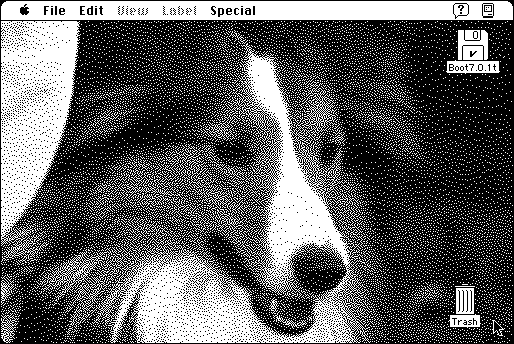

Download
DeskPicture4.51Install.zip (565K) DeskPicture 4.5 repackaged into a zipped hfs disk image and checksum file. The disk image can be mounted with Mini vMac.
DeskPicture4.51Installer.hqx (782K) DeskPicture 4.5 in the original format.
copyright: Clay Maeckel
mod date: Nov 20, 1996
license: shareware
last known url
(gone)
“This control panel allows you to replace your standard desktop patterns with color or black & white pictures”. For “System 7.0 or higher”.

If you find these downloads useful, please consider helping the Gryphel Project, which hosts them.
Here are the md5 checksums for the downloads, signed with Gryphel Key 5:
--------- GRY SIGNED TEXT --------- c71036560ea90a251150c4a0dc168f3c DeskPicture4.51Install.zip 16b9f70e2d4cef5ce1d10f2ed0c21c84 DeskPicture4.51Installer.hqx ------- BEGIN GRY SIGNATURE ------- Gry/4Xa8CFcUzxdN/IEGOLj0aSgYJypqpY1XMA/0Am5Dq01D5PoqkCh6iwu/ugqW Za2u8T3sNWBLfxq1/5gmRmZMCxvS15eH+y4i4Q/D5R33bEWVrQSEhUbFy57P8b7x 4kAc8+zHnuT68h59NUNIpnewxfn41Ol4/PAeJ96/dOUhgK1iqtSwyMHxqm+Z6PnQ -------- END GRY SIGNATURE --------